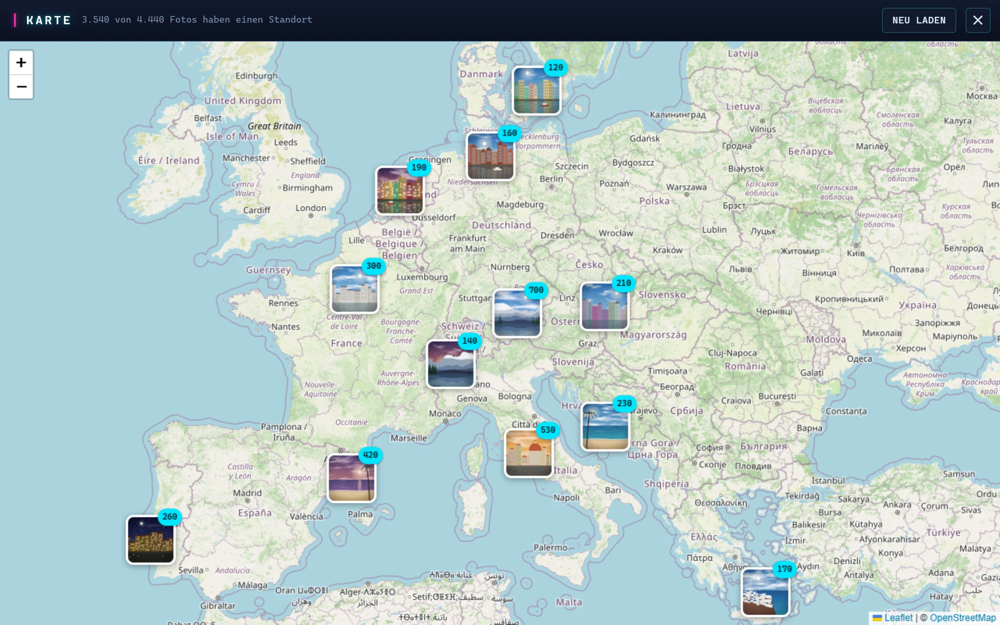
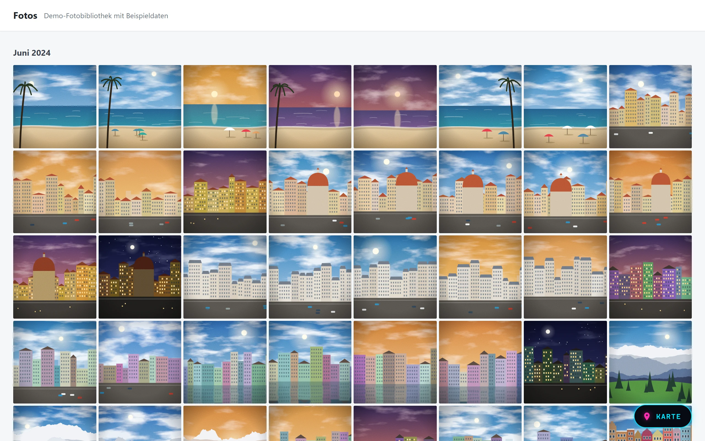
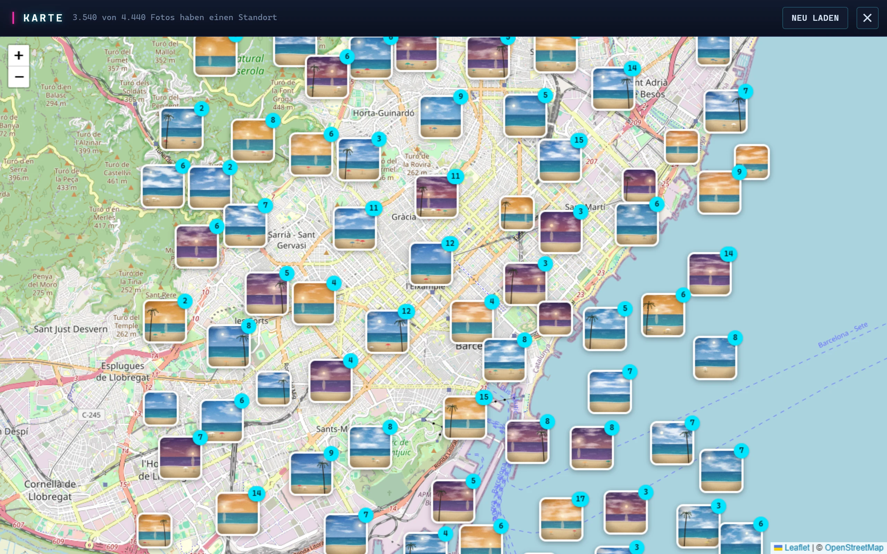
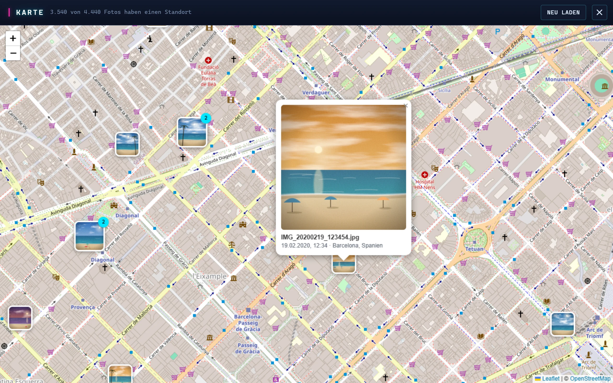
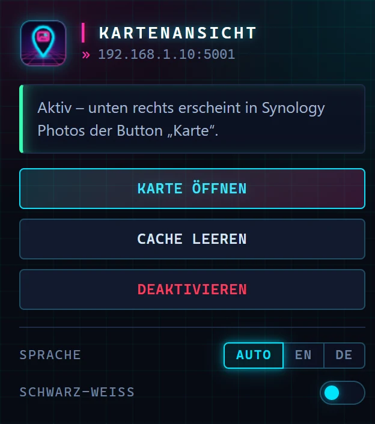

Alle Fotos mit Standort auf einer Karte
Die Apps von Synology Photos haben eine Kartenansicht, die Weboberfläche nicht. Diese Erweiterung ergänzt sie: ein Klick auf „Karte“ zeigt jedes Foto mit GPS-Daten auf einer OpenStreetMap-Karte – gruppiert, mit Vorschaubildern und ohne zweiten Login.

So sieht es aus
Alle Screenshots zeigen Demo-Daten: generierte Beispielmotive an echten Reisezielen, keine echten Fotos.



Funktionen
Gebaut für große Bibliotheken – getestet mit rund 70.000 Fotos.
Kein zweiter Login
Nutzt die bestehende Sitzung im Browser. Jeder sieht genau die Fotos, die er auch in Synology Photos sieht.
Gruppen mit Vorschau
Nahe beieinander liegende Fotos werden zusammengefasst – mit Titelbild und Anzahl.
30-Tage-Cache
Standorte und Vorschaubilder bleiben 30 Tage gespeichert – die Karte ist beim nächsten Öffnen sofort da.
Persönlich & geteilt
Lädt den persönlichen Bereich und – falls vorhanden – den geteilten Bereich.
Minimale Rechte
Zugriff nur auf die NAS-Adresse, für die die Erweiterung aktiviert wurde – jederzeit widerrufbar.
Robustes Laden
Fehlgeschlagene Anfragen werden wiederholt; ein unvollständiger Stand wird angezeigt, aber nie gespeichert.
Funktionsweise
Die Erweiterung läuft komplett im Browser. Es gibt keinen eigenen Server – Daten fließen nur zwischen Browser, NAS und den Kartenkacheln von OpenStreetMap.
Liest beim Seitenstart mit, welchen Session-Token (SynoToken) und API-Pfad die App selbst verwendet.
Button & Overlay, lädt Fotos seitenweise, holt Vorschaubilder und Kartenkacheln.
Leaflet-Karte mit Marker-Clustern. Bekommt Fotos, Vorschaubilder und Kacheln per postMessage.
30-Tage-Cache für Standorte (pro NAS und Benutzer) und Vorschaubilder.
Schaltet die Erweiterung pro NAS-Adresse frei und registriert die Skripte.
Auf der eigenen NAS: Fotoliste mit GPS, Vorschaubilder, Benutzerkennung.
Kartenkacheln. Geladen über content.js, damit die NAS-Adresse als Referer mitgeht.
- Freischalten: Im Popup wird Zugriff auf genau eine NAS-Adresse erteilt; die Content-Scripts werden dynamisch nur dafür registriert.
- Mitlesen:
page-hook.jsmerkt sich Token und API-Pfad aus den Anfragen der Synology-App – so sind keine Zugangsdaten nötig. - Laden:
content.jsholt die Fotoliste in Seiten zu 500 Einträgen (mit Wiederholungen bei Fehlern) und filtert alle Fotos mit GPS-Daten heraus. - Anzeigen: Die Karte im iframe gruppiert die Fotos und fordert nur Vorschaubilder für den sichtbaren Ausschnitt an.
- Merken: Vollständig geladene Standorte und angesehene Vorschaubilder landen 30 Tage im Cache.
Stack
Bewusst schlank: reines JavaScript ohne Build-Schritt und ohne npm-Abhängigkeiten. Der Ordner kann direkt als Erweiterung geladen werden.
| Bereich | Technik | Details |
|---|---|---|
| Plattform | Chrome-Erweiterung, Manifest V3 | Chrome und Edge ab Version 111 |
| Sprache | JavaScript, HTML, CSS | Kein Framework, kein Bundler, kein Build-Schritt |
| Karte | Leaflet 1.9.4 + Leaflet.markercluster 1.5.3 | Lokal mitgeliefert in vendor/ (BSD-2 bzw. MIT) |
| Kartendaten | OpenStreetMap-Kacheln | Über das Content-Script geladen, damit OpenStreetMap einen Referer erhält |
| Datenquelle | Synology Photos Web API | Inoffiziell: SYNO.Foto.Browse.Item, SYNO.Foto.Thumbnail, SYNO.Foto.UserInfo, SYNO.FotoTeam.* |
| Anmeldung | Bestehende Browser-Sitzung | Session-Cookie + X-SYNO-TOKEN (CSRF-Token der App) |
| Skripte | chrome.scripting.registerContentScripts | Dynamisch pro NAS; page-hook.js in der MAIN world, content.js isoliert |
| Berechtigungen | scripting, activeTab, storage, optional_host_permissions | Host-Zugriff nur nach Freigabe im Popup; storage nur für den Farbmodus |
| Sprachen | chrome.i18n mit _locales/ | Englisch und Deutsch – automatisch nach Browsersprache oder im Popup gewählt |
| Kommunikation | window.postMessage | Content-Script ⇄ Karten-iframe; Absender und Herkunft werden geprüft |
| Cache | IndexedDB (Erweiterungs-Origin) | Standorte pro NAS + Benutzer, Vorschaubilder klein/mittel, 30 Tage gültig |
| Tests | Node.js + Edge headless über das DevTools-Protokoll | End-to-End gegen eine simulierte Synology Photos; dieselbe Technik erzeugt Screenshots und Icons |
Datenschutz & Sicherheit
- Kein eigener Server, kein Tracking. Fotos und Standorte verlassen nie die Verbindung zwischen Browser und NAS.
- Einzige externe Anfrage: Kartenkacheln von OpenStreetMap – dabei wird nur die NAS-Adresse als Referer übertragen.
- Der Cache liegt in der Datenbank der Erweiterung im Browserprofil; die Synology-Seite selbst kann ihn nicht lesen.
- Die Karte antwortet nur Seiten, für die die Erweiterung freigeschaltet ist – fremde Webseiten können sie nicht auslesen.
- „Cache leeren“ im Popup löscht alle gespeicherten Daten sofort.
Installation
Die Erweiterung ist (noch) nicht im Chrome Web Store und wird als entpackte Erweiterung geladen.
- Repository herunterladen: ZIP-Datei entpacken oder klonen.
chrome://extensionsbzw.edge://extensionsöffnen und den Entwicklermodus einschalten.- Entpackte Erweiterung laden und den entpackten Ordner auswählen.
- Synology Photos im Browser öffnen und anmelden.
- Auf das Erweiterungs-Symbol klicken → Für diese Adresse aktivieren → Zugriff erlauben.
- Die Seite lädt neu – unten rechts erscheint der Button Karte.
